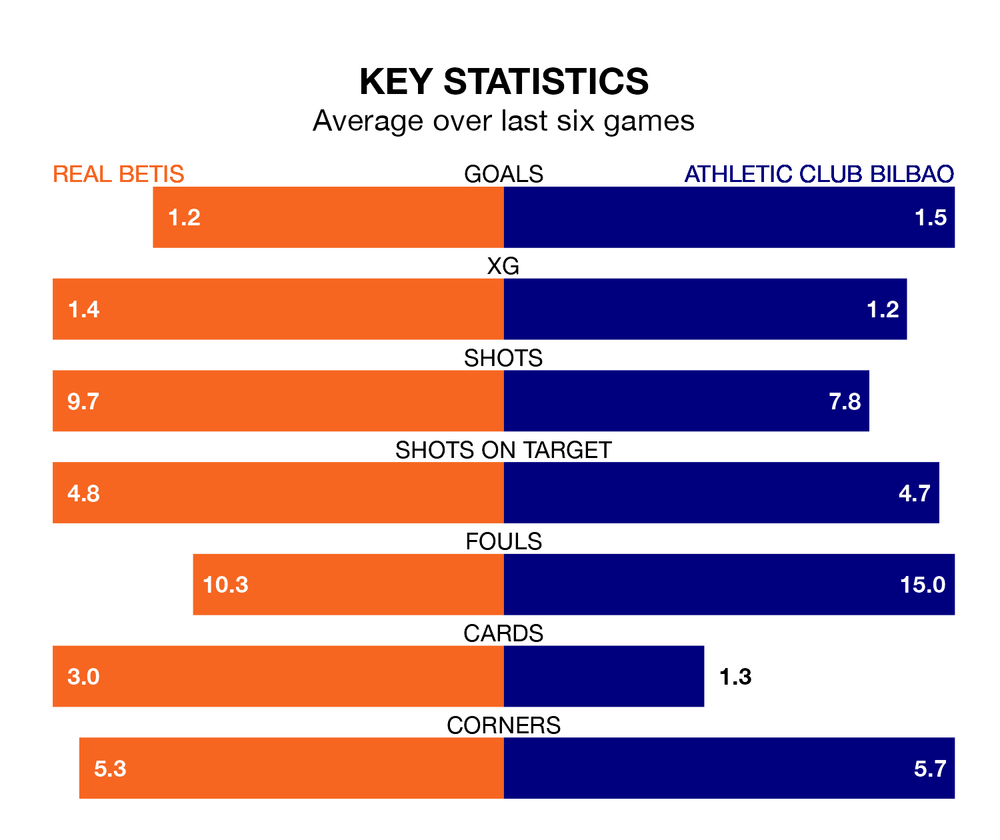

Two of La Liga's meanest defences go head-to-head at the Estadio Benito Villamarín on Sunday, when Athletic Club Bilbao visit Real Betis.
Only one side – Real Madrid – has conceded fewer goals than Athletic to date: the away side have let in just 23 goals in 25 games.
Betis have conceded 25 goals in as many games, giving them the joint-fourth tightest back line so far this season.
Key to Athletic's home form has been Unai Simón, who has allowed 0.92 goals past him per 90 minutes, compared to 0.84 for Rui Silva in the opposite net.
In the last 10 years, Betis and Athletic have played each other on 18 occasions. Betis won four of them, Athletic 10, and they drew four times.
On average, Betis scored 0.9 goals and Athletic 1.7 in those matches.
Their last meeting was on August 27, when Athletic won 4-2 at home.
Athletic are fifth in the table after 25 games, of which they have won 14 and drawn seven, earning 49 points.
Betis are two places behind the visitors in seventh, with nine wins and 12 draws putting them on 39 points.
The home side are in reasonable form in La Liga, with three wins and two draws from their last six games.
And also with three wins and two draws over that period, Athletic's form is identical – they have both taken 11 points from 18.
Athletic's Nico Williams is among the league's most creative players, racking up six assists in 21 appearances so far this season, and holding fourth spot in La Liga's assist charts.
For Betis, Isco and Luiz Henrique have set up the most goals, having laid on three assists apiece to date.
Betis's last match was on Sunday, a 0-0 draw against Deportivo Alavés.
Athletic beat Girona 3-2 last time out, on Monday, with Álex Berenguer (two) and Iñaki Williams on the scoresheet.
Sunday's match will be refereed by Guillermo Cuadra Fernández, who has taken charge of 13 La Liga games so far this season, issuing five red cards and booking 64 players. He has awarded three penalties.
The last Betis game Cuadra Fernández refereed was a 1-0 home win against Granada CF on January 13. His last Athletic match was their 3-2 win away at Villarreal on November 5.
Updated: 10:08 (UTC), 23/02/24